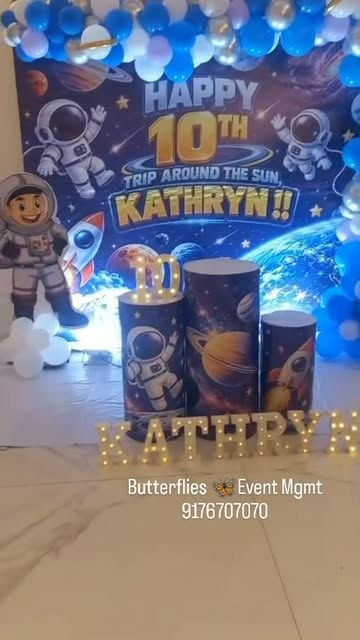

Butterflies
Type a name below and it lights up here, like the letters at the front of our stages.
Inside one of our stages
A space-theme birthday, part by part.

- Balloon garland
- Name on the backdrop
- Light-up age number
- Printed plinths
- Name in light-up letters
Find Butterflies
4.9 on Google
from 288 reviews
9,682 followers
on Instagram, @eventsbybutterflies
Open 24 hours, every day
as listed on Google
4/64, Mangali Aman Kovil Street, St. Thomas Mount, Chennai 600074
Landmark: DMI Foundation. Open in Google Maps